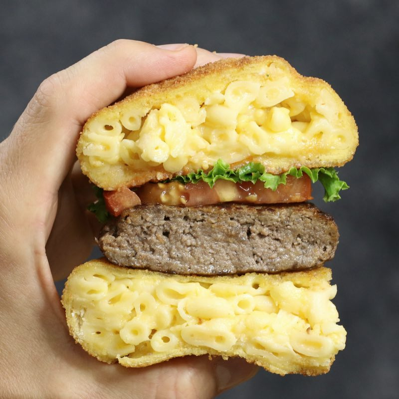

Mac and Cheese Hamburger

The perfect Snack for your next Party
Incredible Mac and Cheese Burger with buns made of creamy mac n cheese that’s breaded and deep fried.
We’ve all had many burgers, but there’s nothing quite like this! And there’s no need to buy buns because mac and cheese IS the bun! This over-the-top recipe is a fun idea for Game Day or a party, and is sure to satisfy your cravings for macaroni and cheese.
Ingredients for 4:
Mac and Cheese Bun
- 300 g Elbow Pasta
- 50 ml Milk
- 1 clove Fresh Garlic
- 60 g Shredded Cheddar Cheese
- 150 g Bread Crumbs
- 2 Eggs
- 150g flour
- Vegetable Oil for Frying
Burger Patties
- 600g Minced Beef
- 1 Onion
- 1 clove Fresh Garlic
Burger
Steps:
Mac and Cheese Buns
- Cook pasta according to the package directions. Drain and return to the pot.
- Place the pot on medium-low heat. Add the milk, garlic and cheddar cheese, stirring until creamy. Remove from heat to cool and thicken for 5 minutes.
- Meanwhile, line a baking sheet with parchment. Place a 10 cm circular cookie (bun size) on top and spoon cooled mac and cheese into to 2 cm thickness. Lift off the cookie cutter and repeat for 5 more pieces. Place the baking sheet into the freezer for at least 2 hours to harden.
- Add 5 cm of oil to a pot or deep fryer and heat to 180°C. Line a large plate with paper towel and set aside.
- Set up three shallow bowls with flour, egg and breadcrumbs. Dredge one piece of mac and cheese first in flour, then egg and finally breadcrumbs. Using tongs, place the breaded mad and cheese into the hot oil.
- Fry for 1-2 minutes per side or until golden brown before removing to the paper towel lined plate. Repeat for the remaining pieces of mac and cheese. Put the buns in the oven for 5 minutes to ensure they're fully cocked in the centre
Burger Patties
- Mix the beef with the onion and garlic.Season the beef with salt and pepper and form into patties. Place a nonstick skillet over medium-high heat and fry the burgers to your desired doneness, about 2-4 minutes per side.
- Place each burger between two mac and cheese buns. Garnish with optional tomato slices, onions and condiments. Serve immediately.